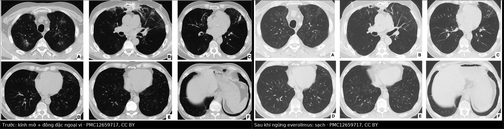
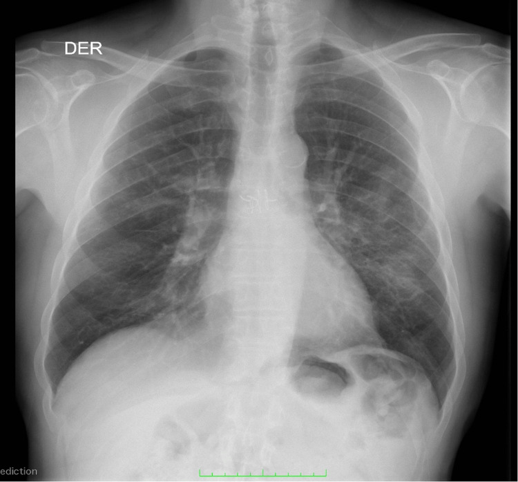
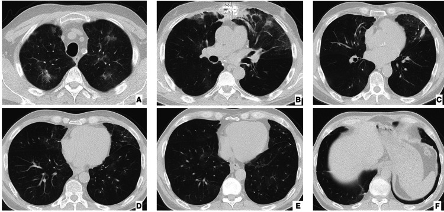
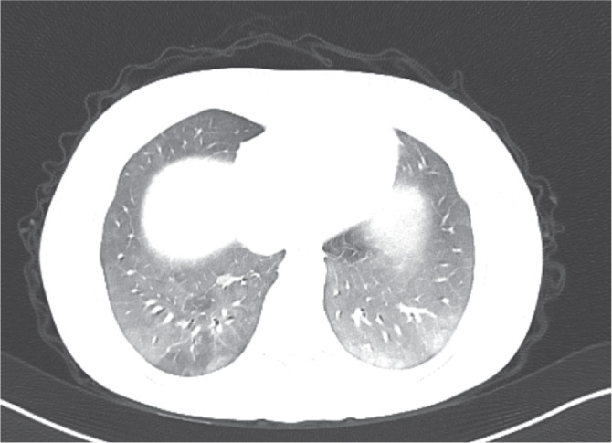

1826 — Viêm phổi do thuốc ức chế mTOR (sirolimus / everolimus) / mTOR inhibitor-associated pneumonitis
Tags: pattern:kinh-mo pattern:dong-dac pattern:vien-kinh-mo pattern:day-ke vung:phoi protocol:CT-nguc-lat-mong protocol:BAL incidentaloma:to-thuoc
Mức chắc chắn (certainty): tổng hợp y văn (literature synthesis) — số liệu dịch tễ và chẩn đoán từ 1 đoàn hệ thực tế 122 bệnh nhân ung thư thần kinh nội tiết (The Oncologist 2022, PMC8895743, CC BY 4.0), 1 phân tích gộp 16 RCT / 8.377 bệnh nhân, 1 đoàn hệ ghép thận 205 ca đổi thuốc, và 3 ca nguyên văn có ảnh (Cureus 2025 — ghép phổi, Turk J Surg 2025 — ghép gan, BMC Nephrol 2024 — ghép thận). Nhóm không có bệnh nhân của mình.
Câu chốt: đây là chẩn đoán loại trừ có thời gian: 23% bệnh nhân dùng everolimus trong thực tế có viêm phổi do thuốc, khởi phát trung vị 3,6 tháng (0,8–50,7 tháng) sau khi bắt đầu — nhưng X-quang ngực có thể gần như bình thường trong khi CT đã lan tỏa hai bên. Ba số phải thuộc: 1,7% viêm phổi NẶNG (16 RCT, 8.377 người; OR 3,36 so với nhóm chứng), 68% hồi phục hoàn toàn sau khi ngừng thuốc, và 14% tái phát khi dùng lại — nghĩa là ngừng thuốc là điều trị, không phải "chờ kháng sinh".
1. Tổng quan bệnh học – cơ chế hình ảnh
1.1 Vì sao thuốc ức chế miễn dịch lại gây viêm phổi "vô khuẩn"
- Đích của thuốc: sirolimus/everolimus ức chế mTORC1, làm giảm tín hiệu VEGF và PDGF — hai yếu tố nuôi dưỡng và ổn định nội mô mao mạch. Hệ quả trên thực nghiệm: nội mô co lại và tăng tính thấm (endothelial contraction and hyperpermeability) qua con đường phosphoryl hóa myosin light chain, tức dịch huyết tương thoát vào khoảng kẽ và phế nang ngay cả khi không có vi khuẩn (Chen X và cs, Am J Respir Cell Mol Biol 2021, DOI 10.1165/rcmb.2020-0390oc).
- Thành phần tế bào: dịch rửa phế quản–phế nang (BAL) ở bệnh nhân viêm phổi do mTOR cho thấy viêm phế nang lympho (lymphocytic alveolitis) — trong loạt 6 ca ghép thận, 4/4 ca có BAL lympho (Rodríguez-Moreno A và cs, Transplant Proc 2009, DOI 10.1016/j.transproceed.2009.06.003). Tức tổn thương vừa do rò dịch (mạch máu) vừa do phản ứng lympho (miễn dịch) — giải thích vì sao hình ảnh giống NSIP/OP chứ không giống phù phổi cấp.
- Vì sao thời điểm lại "tháng thứ 3": cần thời gian để nội mô mất ổn định + tích lũy lympho; trong đoàn hệ 122 ca, thời gian tới viêm phổi trung vị 3,6 tháng (0,8–50,7). Nhưng khoảng 0,8 tháng nghĩa là không có "thời gian ân hạn" an toàn, và đuôi 50,7 tháng nghĩa là bệnh nhân dùng 4 năm vẫn có thể mới khởi phát (ca ghép thận: sau 50 tháng dùng sirolimus).
- Nồng độ thuốc KHÔNG dự báo: trong loạt ghép thận, nồng độ đáy lúc khởi phát 8,2 µg/L (5,5–13,8) — nằm trong khoảng trị liệu. ⇒ Không loại trừ vì "nồng độ thuốc bình thường".
1.2 Dịch tễ — bốn bộ số khác nhau vì bốn bối cảnh khác nhau
| Bối cảnh | Tỉ lệ viêm phổi do mTOR | Nguồn |
|---|---|---|
| Ung thư thần kinh nội tiết, thực tế (đọc có hệ thống báo cáo hình ảnh) | 22,9% (28/122), trong đó G1 32% · G2 50% · G3 14% · G4 4% | PMC8895743 |
| Thử nghiệm everolimus ở NET | 12–17% mọi độ | PMC8895743 (tổng hợp thử nghiệm) |
| Thử nghiệm ở ung thư vú và ung thư thận | 8–16% mọi độ; gộp các thử nghiệm: 2,4% độ 3–4 | PMC8895743 |
| Phân tích gộp 16 RCT / 8.377 bệnh nhân | 1,7% (95% CI 1,1–2,5%) viêm phổi NẶNG; OR 3,36 (2,20–5,12) so với chứng | Zhang X và cs, Future Oncol 2016, DOI 10.2217/fon-2016-0020 |
| Ghép thận, đổi từ ức chế calcineurin sang mTOR | 2,9% (6/205); 4 ca khởi phát 34 ngày (24–46), 2 ca 491 ngày (454–528) | Rodríguez-Moreno A và cs 2009 |
- Vì sao chênh nhau 10 lần: nghiên cứu đọc có hệ thống báo cáo CT bắt được cả thể không triệu chứng (G1), còn thử nghiệm chỉ ghi biến cố có triệu chứng. Vì vậy 23% là "có tổn thương trên CT", 1,7–2,4% là "viêm phổi nặng" — hai con số không mâu thuẫn, và cả hai đều cần thuộc.
- Yếu tố nguy cơ: trong đoàn hệ 122 ca, vị trí u nguyên phát, bệnh phổi nền, hút thuốc, tiền sử điều trị đều KHÔNG liên quan (p > 0,05) → không có bảng điểm nguy cơ đáng tin. Điều duy nhất liên quan là thời gian dùng thuốc dài hơn (18 tháng so với 6 tháng, p = 0,0018) — tức dùng càng lâu, càng dễ gặp, không phải "chỉ trong 3 tháng đầu".
- Điểm phản trực giác nhưng có thật: có viêm phổi do thuốc lại sống lâu hơn (OS 77 tháng so với 52 tháng; HR 0,39, 95% CI 0,19–0,82, p = 0,013) — nhiều khả năng vì nhóm này dùng thuốc đủ lâu để thuốc có tác dụng. Không dùng số này để trấn an bệnh nhân, nhưng dùng để không ngừng thuốc vĩnh viễn một cách máy móc.
1.3 Vì sao phải chụp CT chứ không dựa vào X-quang (vật lý + con số)
- X-quang là ảnh chiếu chồng (projection): toàn bộ chiều dày lồng ngực cộng dồn lên một mặt phẳng, nên tổn thương kính mờ mỏng, phân bố rải rác bị trung bình hóa và bị xương/trung thất che. Trong ca ghép phổi (PMC12659717), phim ngực lúc vào viện gần như bình thường nhưng CT đã có kính mờ + đông đặc nhiều tầng — và bệnh nhân cần oxy bổ sung.
- CT (lát mỏng ≤ 1 mm, không cản quang) đo được đúng thứ cần đo: tính chất (kính mờ vs đông đặc), phân bố (ngoại vi/ven phế quản, dưới hay trên), dấu hiệu đi kèm (dày vách, giãn phế quản co kéo, giãn mạch) và thay đổi theo thời gian — tức toàn bộ kiểu hình (pattern) quyết định chẩn đoán phân biệt.
- Phân bố tổn thương trong 28 ca có CT (PMC8895743): chỉ kính mờ 46,4% (13), kính mờ + lưới 14,2% (4), kính mờ + đông đặc 25% (7), cả ba 14,2% (4). Tức ~46% chỉ có kính mờ — loại tổn thương dễ bị bỏ nhất trên X-quang.
1.4 Vì sao "kính mờ" khác "đông đặc" — và tại sao dấu này quan trọng
- Kính mờ (ground-glass opacity): phế nang đầy một phần (dịch, tế bào) nên vẫn nhìn thấy mạch máu và thành phế quản xuyên qua. Tương ứng mô học: viêm phế nang lan tỏa/NSIP/OP giai đoạn sớm.
- Đông đặc (consolidation): phế nang đầy hoàn toàn → mạch máu bị xóa. Tương ứng: OP/AFOP, viêm phổi thật, nhồi máu.
- Dày vách + lưới + giãn phế quản co kéo: xơ hóa → gợi ý thể NSIP xơ (fibrotic NSIP) — đã gặp ở ca ghép thận dùng sirolimus 50 tháng (PMC11555871), nơi tổn thương không hồi phục hoàn toàn.
- Vì sao cần biết: thể kính mờ/OP thường hồi phục trong vài tuần sau ngừng thuốc, còn thể xơ (lưới + giãn phế quản) có thể để di chứng — tiên lượng và lời hẹn khám khác nhau ngay từ lúc đọc CT.

Trái — trước: kính mờ + đông đặc dải, ưu thế ngoại vi và vùng sau dưới, kèm dày vách và giãn mạch; đây là kiểu hình OP/AFOP. Phải — 4 tuần sau khi ngừng everolimus và chuyển lại tacrolimus liều thấp + prednisone: các tổn thương sạch hoàn toàn. Nguồn: Cureus 2025, PMC12659717, CC BY 4.0; ảnh ghép letterbox, không crop, không kéo giãn.2. Mẫu hình + chẩn đoán phân biệt theo vị trí (gamut)
2.1 Gamut theo KIỂU HÌNH trên CT (cách đọc thực dụng)
- NSIP-like (hay gặp nhất): kính mờ lan tỏa hai bên, đối xứng, dày vách nội tiểu thùy, dưới phổi nhiều hơn, chừa dưới màng phổi (subpleural sparing) ở thể không xơ; thể xơ thêm lưới + giãn phế quản co kéo.
- OP / AFOP: đông đặc dải hoặc nốt, phân bố ngoại vi/ven phế quản, có thể dấu hiệu halo ngược (reverse halo); mô học AFOP đã được chứng minh ở 2 ca (PMC12659717 — ghép phổi; PMC12539980 — ung thư vú).
- Hypersensitivity-like: nốt trung tâm tiểu thùy + kính mờ rải rác, khó phân biệt với nhiễm nấm/lao lan tỏa nếu chỉ nhìn hình.
- Kiểu "lúc có lúc không" (waxing and waning): tổn thương tự giảm rồi tái phát dù vẫn dùng thuốc — đã mô tả trong ung thư thận; rất dễ bị đọc thành "nhiễm trùng tái phát".
2.2 Gamut theo BỐI CẢNH (người ghép tạng: 5 thứ phải loại trừ)
- Nhiễm trùng cơ hội: Pneumocystis jirovecii (kính mờ + nang, LDH tăng, beta-D-glucan), CMV (nốt nhỏ + halo, PCR máu/dịch rửa), nấm xâm lấn, vi khuẩn không điển hình, lao.
- Phù phổi do chức năng mảnh ghép: tim to, tràn dịch hai bên, dày vách trơn đều, đáp ứng lợi tiểu; không có sốt.
- Xuất huyết phế nang lan tỏa (DAH): kính mờ + thiếu máu, ho ra máu, BAL có hemosiderin.
- Tái phát bệnh nền / xâm lấn u: đông đặc khu trú, không đối xứng, có thể di lệch theo thời gian.
- Thải ghép cấp (ghép phổi): đông đặc + dày vách, giảm FEV1, đáp ứng corticoid liều cao — trong ca PMC12659717, mô học đồng thời AFOP + thải ghép cấp độ A4B1R.

Phim ngực thẳng lúc vào viện của bệnh nhân ghép phổi hai bên, khởi phát khó thở sau 6 tháng dùng everolimus: không có đông đặc rõ, không tràn dịch lớn — trong khi CT cùng ngày (ảnh dưới) đã có kính mờ + đông đặc nhiều tầng. Đây là lý do không được dùng X-quang để loại trừ viêm phổi do thuốc. Nguồn: Cureus 2025, PMC12659717, CC BY 4.0.3. Bảng so sánh phân biệt (ma trận đối chiếu)
| Thực thể (entity) | Hình ảnh điển hình | Chốt vào (rule-in) | Chốt loại (rule-out) | Gợi ý xác nhận |
|---|---|---|---|---|
| Viêm phổi do mTOR | Kính mờ hai bên đối xứng, dày vách, chừa dưới màng phổi, ưu thế dưới – ngoại vi; thể xơ có lưới + giãn phế quản co kéo; có thể OP/AFOP | Khởi phát 0,8–6 tháng sau khi bắt đầu (hoặc tới 50 tháng) + cải thiện sau khi ngừng thuốc, cấy/PCR âm, BAL lympho | Có căn nguyên nhiễm trùng được chứng minh (PJP PCR, CMV PCR, cấy dương) → không quy cho thuốc | Ngừng thuốc là phép thử: hồi phục trong 4 tuần; BAL + PCR; sinh thiết khi không rõ |
| Viêm phổi do Pneumocystis | Kính mờ đối xứng quanh rốn, nang khí (pneumatocele) là dấu hiệu gợi ý, không dày vách rõ | Beta-D-glucan dương + LDH tăng + BAL PJP PCR dương | Hồi phục nhanh sau ngừng mTOR mà không cần trimethoprim–sulfamethoxazole → không phải PJP | BAL + PCR PJP; không chờ nếu giảm oxy |
| Viêm phổi do CMV | Nốt nhỏ + halo kính mờ, đông đặc mảng, dày vách | CMV PCR máu/dịch rửa dương, neutropenia | PCR âm 2 lần + hồi phục sau ngừng mTOR → ít khả năng CMV | CMV PCR định lượng; BAL |
| Phù phổi do chức năng mảnh ghép | Dày vách trơn đều + tràn dịch hai bên + tim to, phân bố thấp – trung tâm | Đáp ứng lợi tiểu trong 24–48 giờ, BNP tăng, không sốt | Tổn thương ngoại vi, không tràn dịch, không đáp ứng lợi tiểu → không phải phù | BNP, siêu âm tim, cân nặng/thể tích |
| Xuất huyết phế nang lan tỏa | Kính mờ lan tỏa, có thể đông đặc thùy, không phân bố đối xứng | Ho ra máu + Hb giảm + BAL có hemosiderin/đại thực bào chứa hemosiderin | Không thiếu máu, không ho ra máu, BAL không có hemosiderin → loại | BAL; CT lặp lại (kính mờ di chuyển) |
| Thải ghép cấp (ghép phổi) | Đông đặc + dày vách, giảm FEV1 ≥ 10%, có thể kèm tràn dịch | FEV1 giảm + đáp ứng corticoid xung, sinh thiết A-grade | FEV1 ổn định + tổn thương đối xứng kiểu NSIP → nghĩ thuốc | Hô hấp ký, sinh thiết xuyên phế quản |
| Tái phát/xâm lấn u | Đông đặc khu trú, không đối xứng, lớn dần theo thời gian, có thể hoại tử | Tổn thương đơn ổ, lớn dần trên 2 lần CT, PET dương | Đối xứng hai bên, giảm sau ngừng thuốc → không phải u | So sánh CT cũ, PET/CT, sinh thiết |

Sáu lát trục (A–F) cùng bệnh nhân: kính mờ + đông đặc dải, ưu thế ngoại vi và vùng sau dưới, kèm dày vách nội tiểu thùy và giãn mạch; không có tràn dịch lớn, không có nang. Kiểu hình này gợi OP/AFOP — và mô học sau đó xác nhận AFOP + thải ghép cấp A4B1R. Nguồn: Cureus 2025, PMC12659717, CC BY 4.0 (nguyên bản, không crop).4. Protocol chụp + phân độ và xử trí
4.1 Protocol
- CT ngực lát mỏng ≤ 1 mm, không cản quang, thì hít vào sâu, cả 3 mặt phẳng dựng lại — không cần cản quang cho câu hỏi "có viêm phổi do thuốc hay không" (cản quang chỉ để tìm thuyên tắc/nhiễm trùng ổ).
- Chụp ngay khi có triệu chứng mới (ho, khó thở, giảm SpO₂) — không chờ "đủ 3 tháng"; và chụp lại 4–6 tuần sau khi ngừng thuốc để xác nhận hồi phục (đây là bằng chứng chẩn đoán quan trọng nhất).
- BAL trước khi tăng corticoid nếu bệnh nhân đủ điều kiện: đếm tế bào (lympho trội — trong loạt ghép thận 4/4 ca có viêm phế nang lympho; chưa có ngưỡng % thống nhất), PJP PCR, CMV PCR, cấy vi khuẩn/nấm/lao, hemosiderin (loại DAH).
- Sinh thiết phổi khi: hình ảnh không điển hình, không hồi phục sau 4 tuần ngừng thuốc, hoặc cần phân biệt thải ghép/xâm lấn u. Hai ca có ảnh trong bài đều được sinh thiết và cho AFOP.
- Xét nghiệm máu: công thức, LDH, beta-D-glucan, CMV PCR, BNP, khí máu; KL-6 nếu có (ngưỡng ≥ 500 U/mL đã dùng để định nghĩa tăng KL-6 ở người ghép tim dùng everolimus — PMC13599193).
4.2 Phân độ và xử trí theo độ (CTCAE) — bộ số từ 28 ca
| Độ | Định nghĩa | Xử trí đã dùng trong loạt | Tỉ lệ |
|---|---|---|---|
| G1 | Không triệu chứng, chỉ bất thường hình ảnh | Giảm liều 6/9, tạm ngừng 4/9; không cần corticoid (0/9); theo dõi CT | 32% (9/28) |
| G2 | Có triệu chứng (ho, khó thở) cần can thiệp | Giảm liều 9, tạm ngừng 10, ngừng vĩnh viễn 2; corticoid 7/14 | 50% (14/28) |
| G3 | Cần oxy/nhập viện | Ngừng vĩnh viễn 4/4, corticoid 4/4 | 14% (4/28) |
| G4 | Suy hô hấp đe dọa tính mạng | Ngừng vĩnh viễn, corticoid liều cao, hồi sức | 4% (1/28) |
- Tổng hợp xử trí: giảm liều 32% (9/28), tạm ngừng 50% (14/28), ngừng vĩnh viễn 25% (7/28); corticoid 12/28 (43%); kháng sinh uống 16/28 và tĩnh mạch 4/28 (dùng theo kinh nghiệm trước khi loại trừ nhiễm trùng).
- Kết cục: hồi phục hoàn toàn 68% (19/28), di chứng nhẹ 25% (7/28), di chứng nặng 1 ca, không ca nào tử vong vì viêm phổi trong loạt này.
- Dùng lại thuốc: trong 14 ca tạm ngừng rồi dùng lại, 2 ca (14%) tái phát viêm phổi — 1 ca hết triệu chứng, 1 ca còn di chứng nhẹ. ⇒ Được phép thử lại sau khi hình ảnh sạch, nhưng phải hẹn chụp lại.
- Corticoid liều thực hành: prednisone 0,5–1 mg/kg/ngày (giảm dần 4–8 tuần) là mức thường dùng trong các ca công bố; không có RCT so với chỉ ngừng thuốc.
flowchart TD
A["Bệnh nhân ghép tạng hoặc ung thư đang dùng sirolimus/everolimus: ho, khó thở, giảm SpO2"] --> B["CT ngực lát mỏng ≤ 1 mm, không cản quang"]
B --> C{"Có tổn thương mới: kính mờ hoặc đông đặc?"}
C -->|Không| D["Tìm nguyên nhân khác: suy tim, thuyên tắc, thiếu máu"]
C -->|Có| E["Cấy máu, LDH, beta-D-glucan, CMV PCR, BNP; xét BAL nếu đủ điều kiện"]
E --> F{"Có bằng chứng nhiễm trùng?"}
F -->|Có| G["Điều trị nhiễm trùng theo căn nguyên; vẫn theo dõi khả năng phối hợp do thuốc"]
F -->|Không| H["Xếp là viêm phổi do mTOR và phân độ CTCAE"]
H --> I{"Độ 1: không triệu chứng?"}
I -->|Có| J["Giảm liều hoặc tiếp tục, theo dõi; chụp lại 4-6 tuần"]
I -->|Không| K{"Độ 2: có triệu chứng?"}
K -->|Có| L["Tạm ngừng thuốc + prednisone 0,5-1 mg/kg/ngày, giảm dần 4-8 tuần"]
K -->|Không| M["Độ 3-4: ngừng vĩnh viễn, corticoid liều cao, oxy/hồi sức"]
J --> N{"Sạch tổn thương sau 4-6 tuần?"}
L --> N
M --> N
N -->|Có| O["Cân nhắc dùng lại mTOR, hẹn chụp lại sau 4-6 tuần; tái phát 14%"]
N -->|Không| P["Sinh thiết phổi + hội chẩn: thải ghép, xâm lấn u, nhiễm trùng ẩn"]
4.3 Nguyên tắc "ngừng thuốc nhưng không bỏ ghép"
- Không được chỉ ngừng mTOR rồi để bệnh nhân không có ức chế miễn dịch. Trong các ca công bố, cách làm là chuyển sang ức chế calcineurin (tacrolimus/cyclosporine) ± prednisone liều thấp: ca ghép phổi chuyển về tacrolimus liều thấp + prednisone, ca ghép thận chuyển cyclosporine, ca ghép gan giảm/ngừng everolimus trong phác đồ có tacrolimus.
- Với ung thư: cân nhắc giảm liều hoặc tạm ngừng thay vì ngừng vĩnh viễn ở G1–G2, vì có viêm phổi do thuốc gắn với thời gian dùng thuốc dài hơn và sống lâu hơn (HR 0,39).
- Dự phòng PJP khi tăng corticoid — vì nhiễm PJP là bẫy chết người đúng ở nhóm này.
5. Biến thể bình thường và cạm bẫy
- X-quang bình thường KHÔNG loại trừ — ca ghép phổi có phim gần bình thường cùng ngày CT lan tỏa. Chỉ CT trả lời được.
- "Nồng độ thuốc bình thường" không loại trừ — nồng độ đáy lúc khởi phát 8,2 µg/L (5,5–13,8), trong khoảng trị liệu.
- Không có "cửa sổ an toàn" về thời gian: 0,8 tháng tới 50,7 tháng; ca ghép thận khởi phát sau 50 tháng dùng sirolimus. Hỏi thuốc trong mọi lần đọc CT phổi ở người ghép.
- Bẫy "waxing and waning": tổn thương tự giảm rồi tăng lại dù vẫn dùng thuốc, rất dễ bị đọc là nhiễm trùng tái phát → chuỗi kháng sinh lặp lại không cần thiết trong khi thuốc vẫn là nguyên nhân.
- Bẫy "đã có chẩn đoán nhiễm trùng": 43% ca trong loạt được cho kháng sinh trước/song song; nhiễm trùng và thuốc có thể cùng tồn tại. Không vì "đã dùng kháng sinh mà không đỡ" để loại nhiễm trùng, và không vì "có sốt" để loại thuốc.
- Bẫy ghép phổi: tổn thương có thể là thải ghép cấp — ca PMC12659717 có AFOP + A4B1R cùng lúc; ngừng thuốc mà không tăng ức chế miễn dịch hợp lý có thể làm thải ghép nặng lên.
- Bẫy thể xơ: lưới + giãn phế quản co kéo là di chứng, không phải "đang viêm" → không tăng corticoid chỉ vì hình ảnh còn bất thường; đánh giá bằng chức năng hô hấp và xu hướng theo thời gian.
- Ung thư dùng everolimus: đừng quy mọi đông đặc mới cho thuốc — tái phát/xâm lấn u cũng là đông đặc; so CT cũ, xem tính đối xứng và đáp ứng sau ngừng thuốc.
6. Tự lượng giá — Blind Quiz
Ca 1 — Nam 66 tuổi, ghép phổi hai bên 18 tháng, dùng everolimus 6 tháng nay, khó thở tăng dần + ban đỏ mặt. Nhìn phim ngực và CT, trả lời trước khi mở đáp án.
- Câu hỏi: Phim này loại trừ được viêm phổi không? Nếu không, cần làm gì tiếp và ba xét nghiệm phải có trước khi tăng corticoid?
Bấm để hiện đáp án (findings + chẩn đoán)
- Phim ngực gần bình thường — KHÔNG loại trừ viêm phổi do thuốc. Bước tiếp: CT ngực lát mỏng, và nó cho thấy kính mờ + đông đặc ưu thế ngoại vi/vùng sau.
- Ba xét nghiệm trước khi tăng corticoid: BAL (đếm tế bào + PJP PCR + CMV PCR), beta-D-glucan, cấy máu/đờm; thêm BNP/siêu âm tim để loại phù do mảnh ghép.
- Chẩn đoán: viêm phổi do everolimus, kiểu hình OP/AFOP; sinh thiết xác nhận AFOP + thải ghép cấp A4B1R.
- Xử trí: ngừng everolimus, chuyển tacrolimus liều thấp + prednisone → hình ảnh sạch hoàn toàn trong 4 tuần.
- Nguồn: Cureus 2025, PMC12659717, CC BY 4.0.
Ca 2 — Nữ 19 tuổi, ghép gan vì viêm gan nhiễm độc, dùng everolimus + tacrolimus 6 tháng, ho và khó thở. CT dưới đây; mọi cấy và marker nhiễm trùng âm. Nhìn CT, chọn bước tiếp.

- Câu hỏi: Kiểu hình gì? Vì sao "cấy âm" lại quan trọng ở đây? Bước điều trị quyết định là gì?
Bấm để hiện đáp án
- Kiểu hình: đông đặc dải + nốt ở đáy hai bên + kính mờ lan tỏa — phù hợp OP/NSIP do thuốc, không có tràn dịch lớn, không có nang.
- Vì sao "cấy âm" quan trọng: đây là chẩn đoán loại trừ; nhưng âm tính không đủ — cái chốt là hồi phục sau khi ngừng thuốc. Trong loạt 122 ca, 68% hồi phục hoàn toàn sau khi giảm/ngừng thuốc.
- Bước quyết định: ngừng everolimus (giữ ức chế miễn dịch bằng thuốc khác), không tăng kháng sinh; nếu triệu chứng nặng → corticoid 0,5–1 mg/kg giảm dần; chụp lại 4–6 tuần.
- Nguồn: Turk J Surg 2025;41(1):105–107, PMC11878176, CC BY-NC 4.0.
Ca 3 — Bệnh nhân ung thư thần kinh nội tiết dùng everolimus tháng thứ 5, ho khan, không sốt, SpO₂ 96%, CT chỉ có kính mờ nhẹ hai bên dưới. Đây là độ mấy và có phải ngừng thuốc vĩnh viễn?
Bấm để hiện đáp án
- Độ 1–2 (tùy có triệu chứng hay không): trong loạt 122 ca, 32% là G1 (không triệu chứng) và 50% là G2; G1 không cần corticoid (0/9), chủ yếu giảm liều hoặc tạm ngừng rồi chụp lại.
- Không ngừng vĩnh viễn ngay: ngừng vĩnh viễn chỉ ở 25% (7/28) ca — chủ yếu G3–G4. Với G1–G2, giảm liều/tạm ngừng + theo dõi; nếu sạch tổn thương có thể dùng lại (tái phát 14%).
- Bắt buộc: loại trừ PJP/CMV trước khi kết luận "chỉ do thuốc", vì cùng hình ảnh mà điều trị khác hẳn.
- Nguồn số liệu: The Oncologist 2022, PMC8895743, CC BY 4.0.
Bài liên quan chéo
- 196 – Hội chứng gan phổi tồn tại sau ghép gan (giảm oxy sau ghép gan không phải luôn do shunt)
- 116 – Nhiễm trùng nặng ở bệnh nhân ghép thận (bối cảnh ức chế miễn dịch, cùng nhóm nhiễm trùng cơ hội)
- 085 – Độc tính miễn dịch quanh mô ung thư phổi (viêm phổi do thuốc/thải ghép — cùng khung "chẩn đoán loại trừ")
- 001 – Tổng quan hệ Ngực
- 020 – Nốt phổi (khi tổn thương là nốt, không phải kính mờ lan tỏa)
Ảnh
1826_mtor-pneumonitis_XR_PMC12659717.jpg— X-quang ngực gần bình thường (bẫy "X-quang âm").1826_mtor-pneumonitis_CT_PMC12659717.jpg— CT 6 tầng: kính mờ + đông đặc ngoại vi/vùng sau.1826_mtor-pneumonitis_CT-sau-ngung-thuoc_PMC12659717.jpg— CT sau 4 tuần ngừng thuốc: sạch.composite_truoc-sau.jpg— ảnh ghép đối chiếu trước/sau (cùng bệnh nhân).1826_mtor-pneumonitis_CT-gan-ghep_PMC11878176.jpg— ca ghép gan: đông đặc dải + kính mờ lan tỏa.1826_mtor-pneumonitis_CT-gan-ghep-hoi-phuc_PMC11878176.jpg— ca ghép gan sau ngừng thuốc: cải thiện rõ.- Nguồn và giấy phép từng ảnh:
images/CREDITS.md. Tác giả đã đối chiếuauthorStringqua Europe PMC (PMC12659717: Varón-Vega F và cs; PMC11878176: Sağlam K và cs).
Không dùng để chẩn đoán độc lập khi chưa có người hướng dẫn.